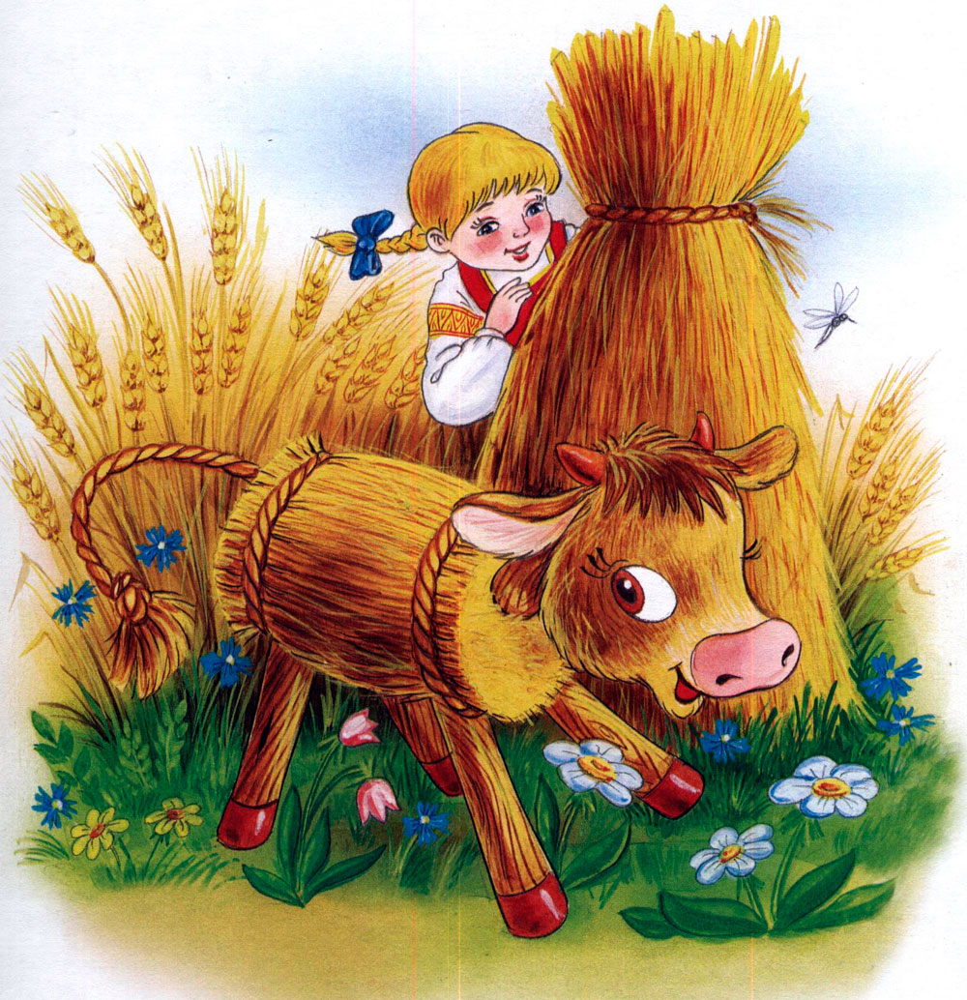

Жили-были дед да баба. Раз баба деду и говорит:
— А сделай-ка ты мне старик соломенного бычка!
— На что тебе бычок-то сдался? — удивился дед.
— А сделай и сам увидишь!
Дед долго не раздумывал, пошёл и смастерил бычка из соломы, а чтобы бычок крепкий был, засмолил его круглые бочка смолой.
Вышел бычок — соломенный бочок любо-дорого смотреть.
Утром баба взяла бычка в охапку и пошла в чисто поле его пасти, а чтобы время бодро летело и прялку с собой прихватила.
Прядёт-прядёт, а сама на бычка посматривает. Солнце высоко стоит, горячо жарит, вот старушка и задремала.
А в это время из лесу медведь вышел и прямиком к бычку:
— А ты кто-такой?
— А я бычок — соломенный бочок.
Медведь хвать бычка и прилип к его смоляному бочку. На шум баба проснулась и давай кричать что есть сил:
— Дед, дед, беги скорее, наш бычок настоящего медведя поймал!
Дед прибежал, схватил медведя и запер его в погребе.
На следующее утро баба опять взяла бычка в охапку и пошла в чисто поле. Прядёт-прядёт, а сама на бычка посматривает.
А в это время из лесу волк вышел и прямиком к бычку:
— А ты кто-такой?
— А я бычок — соломенный бочок.
Волк хвать бычка и прилип к его смоляному бочку. А баба опять кричит:
— Дед, дед, беги скорее, наш бычок волка поймал!
Дед и волка в погребе запер.
На третий день баба опять в поле с бычком сидит. Прибежала лисица. Спрашивает бычка:
— А ты кто-такой?
— А я бычок — соломенный бочок.
Прилипла и лисица.
— Дед, наш бычок лисичку поймал! — кричит баба.
Дед прибежал, схватил медведя и запер его в погребе.
Вот сидит старик возле погреба и размышляет вслух:
— Хитра да умна моя баба оказалась. Целый погреб зверей у нас! Поди из медведя-то тёплая шубка выйдет!
А медведь услыхал такие разговоры, испугался, что его на шубу пустят и молит старика:
— Сжалься дед, отпусти меня в лес к моей семье. Я тебе вовек благодарен буду. А на завтра мёду тебе принесу целый бочонок!
— А не обманешь меня косолапый? — спрашивает дед.
— Не обману.
Отпустил дед медведя, а сам дальше сидит, приговаривает.
— Знатная шапка из волка получится!
Волк услыхал такие слова и давай просить-молить деда:
— Сжалься дед, отпусти меня в лес к моей семье. Я тебе вовек благодарен буду. А на завтра две овечки приведу.
— А не обманешь меня серый? — спрашивает дед.
— Не обману.
Отпустил дед волка, а сам дальше сидит, приговаривает.
— Лисица рыжая, да пушистая, вот воротник бабе выйдет богатый!
Лисица услыхала такие слова и давай просить-молить деда:
— Сжалься дед, отпусти меня в лес к моей семье. Я тебе вовек благодарна буду. А на завтра гусей, уток да кур принесу.
— А не обманешь меня рыжая? — спрашивает дед.
— Не обману.
Отпустил дед лисицу.
Вот утром только светать стало, а у деда в ворота «стук-постук». Глядь, а там медведь мёд принёс, волк овец пригнал, а лисица — гусей, уток да кур.
Рады дед да баба. Стали жить-поживать, да голода не знать.